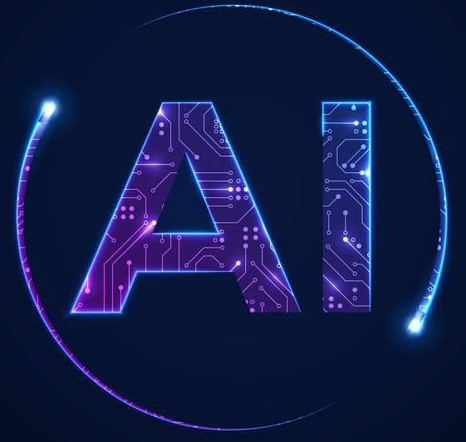

LA IA DOMINANDO AL MUNDO
La inteligencia artificial es una tecnología tan amplia y revolucionaria que es difícil dar una definición precisa. Puede considerarse una rama del campo de la informática, cuyo objetivo es crear máquinas capaces de realizar tareas que tradicionalmente requerían inteligencia humana. Sin embargo, la IA es una ciencia interdisciplinaria con múltiples enfoques. Hoy en día, el Machine Learning (aprendizaje automático) y el Deep Learning (aprendizaje profundo) son dos técnicas utilizadas en empresas de todos los sectores.
Machinen learning y el deep Learning
El Machine (aprendizaje automático) y el Deep Learning (aprendizaje profundo) son las dos técnicas principales de inteligencia artificial que se utilizan en la actualidad. La distinción entre IA, ML y DL puede prestarse a confusión. En realidad, la inteligencia artificial puede definirse como una serie de algoritmos y técnicas que pretenden imitar la inteligencia humana.
El Machine Learning es una categoría de IA, y el Deep Learning es una técnica de Machine Learning. El Machine Learning es el proceso de alimentar un ordenador con datos. La máquina utiliza técnicas de análisis sobre estos datos para «aprender» a realizar una tarea. Para conseguirlo, no necesita ninguna programación específica con millones de líneas de código. Por eso se denomina aprendizaje «automático». El Machine Learning puede ser «supervisado» o «no supervisado». El Deep Learning es un tipo de Machine Learning directamente inspirado en la arquitectura de las neuronas del cerebro humano. Una red neuronal artificial está compuesta por múltiples capas, a través de las cuales se procesan los datos. Esto es lo que permite que la máquina «profundice» en su aprendizaje, identificando conexiones y alterando los datos introducidos para conseguir los mejores resultados.¡ULTIMAS NOTICIAS!
Project Astra, el asistente universal.
Project Astra es el nuevo asistente de Google potenciado con inteligencia artificial. Un ejemplo de lo mucho que puede dar de sí esta tecnología aplicada a nuestra vida diaria. Y que deja en mal lugar los asistentes actuales, como Siri o Alexa, limitados a los comandos de voz y a las búsquedas online. Project Astra es un gran avance, ya que puede procesar imagen y sonido ofreciendo respuestas con una naturalidad que recuerda a la película Her del cineasta Spike Jonze.
El comienzo de la fusión entre la realidad virtual y física.
La Vision Pro de Apple han salido a la venta este año. Por precio y funcionalidades no será un producto masivo, pero Apple siempre tiene esa capacidad de impulsar tecnologías y ecosistemas hacia delante. Muchas empresas y profesionales, de hecho, ya están comenzando a experimentar con ellas, con la realidad extendida o aumentada, y el concepto bautizado por Apple como de “computación espacial”. Esto se suma a una tendencia que hemos ido viendo avanzar en los últimos años y que, por supuesto, también tiene a Meta y su metaverso, aunque con otro enfoque, de por medio. Es posible que este año, al fin, esta industria comience a generar tracción y vayamos viendo poco a poco cómo las líneas entre la realidad virtual y la realidad física se van ido difuminando.
Las alucinaciones de la inteligencia artificial.
Millones de personas han conocido lo que llamamos inteligencia artificial a través de los chatbots o bots conversacionales como ChatGPT, Gemini o Copilot. Puedes hablar con ellos como si al otro lado hubiera una persona. Dan respuestas que pretenden imitar la manera de escribir o hablar de los humanos. Y, en ocasiones, se producen errores. Para nosotros son errores. Pero para los expertos se trata de alucinaciones de la inteligencia artificial.
Lamentablemente, confiamos en exceso en las herramientas que usamos para buscar algo o informarnos. En la mayoría de las veces, acertamos. Pero, en ocasiones, nos vemos abocados a quedarnos con un dato incorrecto. En la mayoría de las veces, esta búsqueda crítica requiere tiempo que no siempre tenemos.
La inteligencia artificial va a cambiar el mundo, pero todavía sigue siendo un misterio para mucha gente.